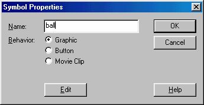
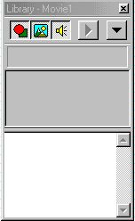
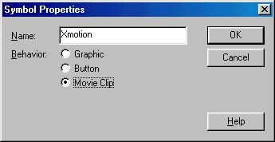
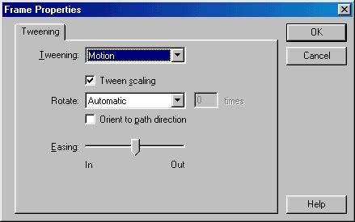
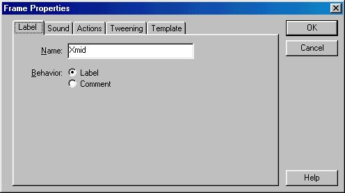
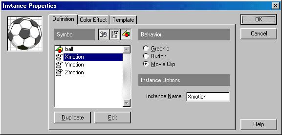
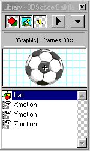
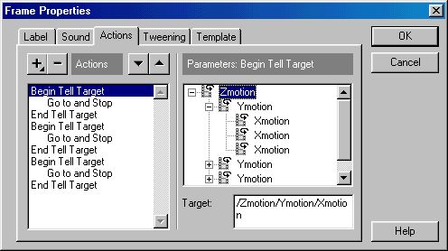

3D Motion with Macromedia Flash
by Bill Tagliaferro, ENS Inc.
[Download Source]
This tutorial is based on early work from Colin Ln, who has been a very good source of help and inspiration. In many ways he stands out as a Flash Master.
Preview
This tutorial was produced as a result of numerous requests for an
explanation of how to do the 2D and 3D motion seen in my "Tell Target" tutorial.
It has many application, especially for those who want to use Flash for games.
The motion itself can be controlled from within the movie or from a Javascript
routine outside the movie. Both will be covered here. The real strength of this
technique is in the Javascript interaction. If you're uncomfortable with Javascript
this tutorial may not be for you.
Prerequisites for this tutorial are:
- A good understanding on the use of the "Tell Target" action(s).
- A working knowledge of Javascript 1.2.
- A working knowledge of Flash 3.
Step-by-step
Overview:
- Make your object symbol (soccer ball in this case).
- Make your X (left and right) motion clip.
- Make your Y (up and down) motion clip.
- Make your Z (in and out of the page) motion clip.
- Inserting the final clip into the main scene and initializing it.
- Write the Javascript and HTML code.
Within each of these steps there will be several other steps that must be taken.
It will be easier to follow all of the steps as we go through them, if you keep in mind the four
major steps. What you will then see, is a pattern emerging for each axis motion.
This pattern is very important because it can be used in a number of
very interesting applications.
- Making your object symbol.
To learn this technique I suggest that you pick a very simple object
to move in 3-dimensions. One of the famous (or infamous) spheres should do fine.
I've used a soccer ball just for fun.
- Make a sphere by drawing a circle and giving it a radial fill.
- Once you have your sphere, select it and make a symbol out of it by going to
Insert|Create Symbol or just press F8.
- When the symbol properties box pops up, make sure that you give your symbol a name and
click the graphic behavior.

- Now clear your main scene if you used it to make your sphere symbol (Edit|Select ALL then Delete).
- Making your X motion clip.
Your X motion will be the motion from left to right. The amount of movement
depends on your taste and needs. In this tutorial I just move the ball from edge to edge of the scene.
We will use this as our limits as well.
- If your library window isn't open, go to Window|Library to open it. We will use
this window often in this tutorial. It's where we'll start all movie clips.

- Click on the down arrow and select Create.
- When the symbol properties window opens, give this clip the name "Xmotion" and select Movie Clip as the behavior.

- Drag an instance of your object symbol (soccer ball in this case) into the movie clip scene and center it.
- Insert (F5) however many frames you want for the Xmotion (more frame means finer resolution).
- Move the symbol to the left most position of the Xmotion keeping the symbol on the horizontal centerline.
- Put a stop action in the first keyframe.
- Insert (F6) a keyframe in the last frame of your time line and then move the symbol to the right most position of the Xmotion, keeping it centered horizontally.
- Highlight the entire timeline and motion tween it (Modify|Frame or Ctrl-F).

- Insert one last keyframe in the time line at its mid point (frame 50 of a 100 frame clip).

- Label this keyframe Xmid. This will be where the movie is initialized.
- Making your Y motion clip.
The Ymotion clip is built using the same steps as the Xmotion with two exceptions: 1)the symbol used is the Xmotion, and 2) the motion itself is in the vertical plane.
- Your library window should still be open.
- Click on the down arrow and select Create.
- When the symbol properties window opens, give this clip the name "Ymotion" and select Movie Clip as the behavior.
- Drag an instance of your Xmotion symbol into the movie clip scene.
- Make sure that the center of the Xmotion ( the + sign) is centered in the scene.
- Double click on the Xmotion symbol and give it an instance name of "Xmotion".

- Insert (F5) however many frames you want for the Ymotion (more frame means finer resolution).
- Move the symbol to the bottom most position of the Ymotion keeping the +sign of the symbol on the vertical centerline.
- Put a stop action in the first keyframe.
- Insert (F6) a keyframe in the last frame of your time line and then move the symbol to the top most position of the Ymotion, keeping it centered vertically.
- Highlight the entire timeline and motion tween it (Modify|Frame or Ctrl-F).
- Insert one last keyframe in the time line at its mid point (frame 50 of a 100 frame clip).
- Label this keyframe Ymid (see Xmid). This will be where the movie is initialized.
- Making your Z motion clip.
The Zmotion clip is built using the same steps as the Ymotion with two exceptions: 1)the symbol used is the Ymotion, and 2) the motion itself is in and out of the scene.
- Your library window should still be open.
- Click on the down arrow and select Create.
- When the symbol properties window opens, give this clip the name "Zmotion" and select Movie Clip as the behavior.
- Drag an instance of your Ymotion symbol into the movie clip scene.
- Make sure that the center of the Ymotion ( the + sign) is centered in the scene.
- Double click on the Ymotion symbol and give it an instance name of "Ymotion".
- Insert (F5) however many frames you want for the Zmotion (more frame means finer resolution).
- Scale the symbol to the maximum size you want to represent the near field.
- Put a stop action in the first keyframe.
- Insert (F6) a keyframe in the last frame of your time line and then scale the symbol to the minimum size you want to represent the far field.
- Highlight the entire timeline and motion tween it (Modify|Frame or Ctrl-F).
- Insert one last keyframe in the time line at its mid point (frame 50 of a 100 frame clip).
- Label this keyframe Zmid (see Xmid). This will be where the movie is initialized.
- Inserting the final clip into the main scene and initializing it.
At this point you should have an empty scene with a symbol library that looks something like this.
The final motion is totally contained in the Zmotion clip. This is the one we will put on stage to be controlled by the Javascript function.
One important thing to remember at this point is that the Zmotion clip will not be initialized (all clips positioned at their "MID" frame).
This means that the clip will have to be places in a location so that when initialized it will be at the correct location on stage.
Hint: put a small dot at the location where you want the object (soccer ball) to be when initialized. Make your adjustments to the symbol's location until it's on the dot. Then get rid of the dot.
- Drag your Zmotion symbol onto the stage. Remember to place it so that when initialized to the mid points it will be at the correct location (see Hint above).
- Double click on the Zmotion symbol to open the instance properties window. Give this the name Zmotion.

- Using the "Tell Target" action position each clip to its mid point (Xmid, Ymid, Zmid remember?).
The paths are:
- For Xmotion: /Zmotion/Ymotion/Xmotion
- For Ymotion: /Zmotion/Ymotion
- For Zmotion: /Zmotion
- Writting the Javascript and HTML code.
If you're not into Javascript then you may want to build some continuous feedback buttons to control the motion in 3D.
This example use Javascript and mouse actions to control the soccer ball in 3D space.
See a Preview
Tips During Development
Creating this type of webpage is not very forgiving. There are few if any error messages when your code doesn't work
I have found that it pays to plan as far ahead as possible and then have a note pad handy for things you missed. For example, when you're coding the Javascript functions it's nice to have the movie clip paths handy.